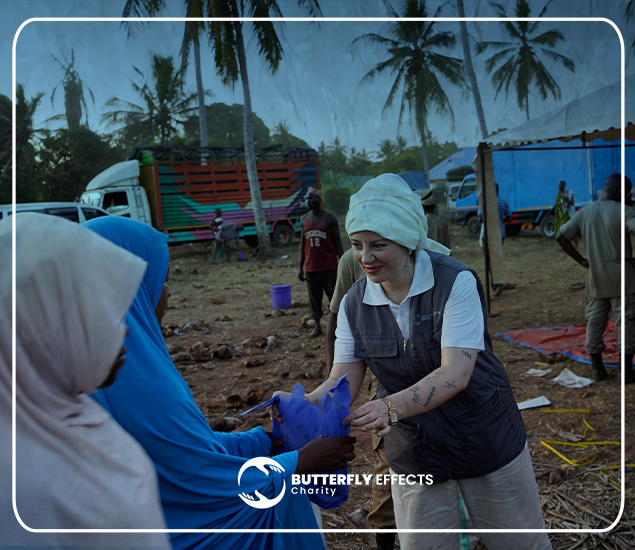

Bedürftigkeit
Die konkrete Situation verstehen.
Unsere Projekte
Hilfe orientiert sich am Menschen und an dem, was wirklich gebraucht wird.

Passende Unterstützung
Manchmal zählt schnelle Hilfe. Manchmal braucht es einen langfristigen Weg.
Acht Hilfsbereiche
Entdecken Sie den Bereich, den Sie unterstützen möchten.




Regelmäßig helfen
Mit einer Fördermitgliedschaft geben Sie Projekten Planungssicherheit und helfen langfristig.
Fördermitglied werdenUnser Vorgehen
Vier Grundsätze leiten jede Projektentscheidung.
Die konkrete Situation verstehen.
Akute Belastungen priorisieren.
Hilfe nachvollziehbar verteilen.
Perspektiven dauerhaft stärken.